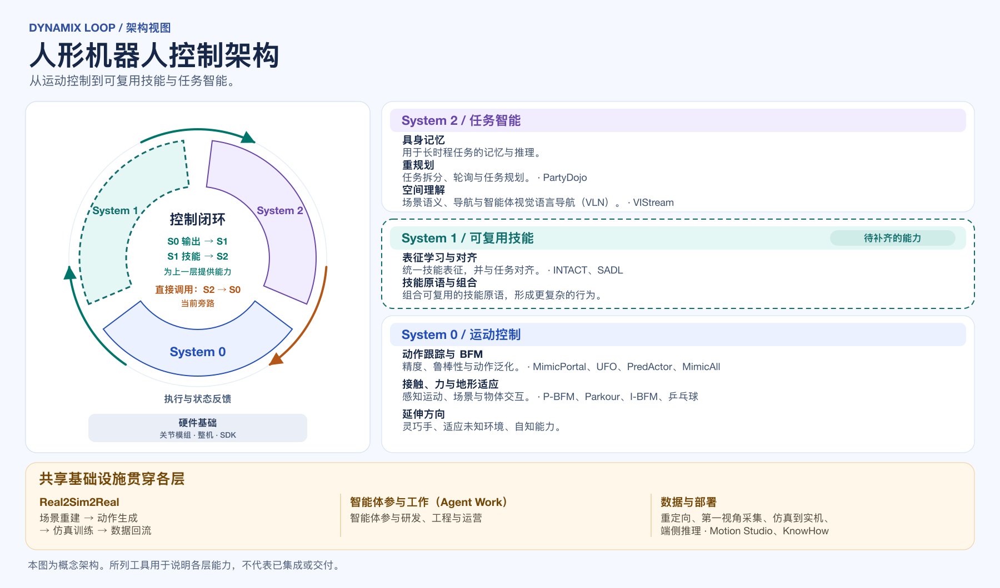

运动跟踪DynamiX Loop 项目
MimicPortal
用于开发运动跟踪策略与学习可复用行为。
查看仓库能力路线图

系统架构
System 0 负责执行运动，并为 System 1 提供输出；System 1 则将这些能力转化为可复用、可组合的技能。System 2 可利用这些技能进行规划和重规划。在 System 1 尚待补齐的阶段，System 2 可以直接调用 System 0；共享基础设施贯穿各层，连接数据、仿真、部署与实机反馈。

研发项目
已有自有项目的方向展示对应仓库；尚未列出项目的方向明确标记为预留。
用于开发运动跟踪策略与学习可复用行为。
查看仓库计划作为人体动作到机器人重定向的主要工作台。
查看仓库面向 MuJoCo 物理引擎的精选机器人和传感器模型集合。
查看仓库为 DynamiX Loop 自有运动生成项目预留，暂未列出内部项目。
为可复用技能表征、技能原语和组合方向预留。
为共享验证与部署工具预留，暂未列出仓库。
为各交付项目可共用的感知与交互技术栈预留。
为团队的规划、记忆或推理项目预留。
技术目录
本目录汇总运动控制、操作和智能体研究所需的数据集。请从链接指向的来源获取数据并引用相应版本；在使用或再分发前，查阅访问条件和许可条款。团队选用数据集时，应记录版本、用途、重定向配置以及训练集和评估集的划分。
使用中表示团队正在使用该仓库。其他第三方项目供参考或评估。
| 体系层 | 模块 | 说明 | 仓库 |
|---|---|---|---|
| 知识沉淀 | 知识库 | DynamiX Loop 的人形机器人控制知识库。 | 🚧 建设中 |
| 运动控制基础设施 | 数据生成 · generate | 生成用于策略训练的运动数据。 | NVIDIA Kimodo |
| 运动控制基础设施 | 运动重定向 | Motion Studio 是计划采用的主要运动重定向工具，hhtools 是当前的备选方案。 | DynamiX Loop Motion Studio · hhtools |
| 运动控制基础设施 | 行为基础策略 · MimicPortal | DynamiX Loop 的运动跟踪策略开发仓库。 | Dynamicx-Loop/mimicportal · 上游仓库 |
| 运动控制基础设施 | 无监督学习 · UFO | 使用中。 通过 FB 和 TeCH 学习可复用的人形机器人行为。 | UFO |
| 运动控制基础设施 | 动作扩散 · PredActor | 使用扩散模型生成运动与动作的上游参考。 | 参考分支 · MasterYip 上游仓库 |
| 运动控制基础设施 | 无机器人采集 · Ego Humanoid | 无需机器人即可采集人体运动。 | DynamiX Loop 路线图 |
| 运动控制基础设施 | 部署 · 近期重点 | 将策略迁移到不同仿真器及机器人实机，并利用实机数据改进仿真。仿真到仿真 · 仿真到实机 · 实机到仿真。 | 团队工作方向，暂无指定仓库 |
| 交互与感知基础设施 | 交互 BFM · I-BFM | 使用中。 学习与物体交互的全身技能。 | I-BFM · 部署示例 |
| 交互与感知基础设施 | 感知 BFM · P-BFM | 使用中。 学习适应地形的移动与运动跟踪。 | P-BFM |
| 全身操作基础设施 | JEPA 世界模型 · INTACT-JEPA | 基于动作意图进行预测的世界模型参考。 | 参考分支 · 浙江大学上游仓库 |
| 表征学习 | 抗坍塌损失 · SADL | 使用供需损失（Supply And Demand Loss）缓解表征坍塌的上游参考。 | 参考分支 · 浙江大学上游仓库 |
| 数据集 | 内容 | hhtools 模式 | 论文 | 下载 | DynamiX Loop 用途 |
|---|---|---|---|---|---|
| AMASS | 汇总多个光学动作捕捉数据集，采用 SMPL-X 表示。 | mimic | 📄 arXiv | 🌐 site | — |
| LAFAN1 | BVH 动捕数据，涵盖移动、舞蹈、跌倒和恢复等动作。 | mimic | 📄 arXiv | 💻 GitHub | MimicPortal |
| BONES-SEED (SOMA) | 采用 SOMA 表示的大规模动作捕捉语料库。 | mimic | 📄 arXiv | 🤗 HF | MimicPortal |
| 100STYLE | 用 Xsens 采集多种风格的步行和跑步动作，以 60 Hz BVH 格式发布。 | mimic | 📄 ACM | 🌐 site | MimicPortal |
| HiPHI | 通过光学动捕记录人体全身运动和人与物体交互。 | — | Noitom Robotics | Hugging Face | — |
| MotionDecode | 以 120 Hz 采样的 Unitree G1 运动轨迹。 | R2R | 🌐 site | 🤗 HF | — |
| Motion-X | 从视频中重建的全身运动。 | mimic | 📄 NeurIPS | 💻 GitHub | — |
| PHUMA | 包含物理约束信息的人形运动数据。 | mimic | 📄 arXiv | 💻 GitHub | — |
| GVHMR | 从单目视频重建人体运动的工具。 | mimic | 📄 arXiv | 💻 GitHub | — |
| OMOMO | 人与物体交互的运动序列。 | intermimic | 📄 arXiv | 🤗 HF | — |
| OmniContact | 以 90 Hz 光学动捕记录的人与物体交互序列。 | intermimic | 📄 arXiv | 🤗 HF | — |
| holosoma | 用于感知式移动和跑酷的运动与地形参考。 | meshmimic | 📄 arXiv | 💻 GitHub | — |
| PARC MS | 与地形对齐的障碍跨越和跑酷动作。 | meshmimic | 📄 arXiv | 🤗 HF | — |
| Parkour Mocap | 143 段跨越障碍的动作，包含撑越、坡道、平衡木和空翻，采用 120 Hz 光学动捕。 | meshmimic | — | 🤗 HF | — |
| any4hdmi collection | 已转换为可用于策略训练格式的运动数据集合集。 | — | — | 🤗 HF | — |
| 类别 | 数据集 | 内容 | 论文 | 下载 |
|---|---|---|---|---|
| 🦾 跨本体机器人 | Open X-Embodiment | 覆盖 22 种机器人本体，包含逾 100 万条实机轨迹。 | 📄 arXiv | 🌐 site |
| DROID | 在多种真实环境中采集的 7.6 万条 Franka 操作轨迹。 | 📄 arXiv | 🌐 site | |
| BridgeData V2 | 在不同环境中采集的 WidowX 操作示范。 | 📄 arXiv | 🌐 site | |
| AgiBot World | 面向双臂操作的大规模实机数据。 | 📄 arXiv | 🤗 HF | |
| RoboMIND | 涵盖人形机器人在内的多种机器人本体的遥操作轨迹。 | 📄 arXiv | 🌐 site | |
| Galaxea Open-World | 在家庭及工作空间采集的移动双臂操作数据。 | 📄 arXiv | 🤗 HF | |
| 🤖 人形机器人 | Humanoid Everyday | 开放环境下的人形机器人操作数据。 | 📄 arXiv | 🌐 site |
| GR00T X-Embodiment Sim | 用于 GR00T N1 的机械臂与人形机器人仿真轨迹。 | 📄 arXiv | 🤗 HF | |
| Unitree open datasets | 采用 LeRobot 格式的 G1 灵巧手遥操作数据。 | — | 🤗 HF | |
| 👐 人体第一视角与手物交互 | Ego4D | 超过 3,000 小时的第一视角视频。 | 📄 arXiv | 🌐 site |
| EgoDex | 包含三维手部跟踪的第一视角灵巧操作任务。 | 📄 arXiv | 💻 GitHub | |
| HOT3D | 第一视角多视点下的手与物体三维跟踪数据。 | 📄 arXiv | 🌐 site | |
| ARCTIC | 双手与关节物体的灵巧交互。 | 📄 arXiv | 🌐 site | |
| OakInk2 | 复杂活动中的双手物体交互。 | 📄 arXiv | 🌐 site | |
| DexYCB | 使用 YCB 物体采集的手部抓取数据。 | 📄 arXiv | 🌐 site | |
| GigaHands | 大规模双手活动标注记录。 | 📄 arXiv | 🌐 site | |
| 🧪 仿真基准 | LIBERO | 用于机器人操作终身学习的仿真套件。 | 📄 arXiv | 🌐 site |
| RoboCasa | 面向机器人家务操作的仿真环境。 | 📄 arXiv | 🌐 site | |
| BEHAVIOR-1K | 覆盖上千项日常活动的仿真套件。 | 📄 arXiv | 🌐 site |
| 路线图方向 | 数据集 | 内容 | 论文 | 下载 |
|---|---|---|---|---|
| 📋 任务规划与多任务分解 | ALFRED | 由语言指令驱动的仿真家务任务。 | 📄 arXiv | 🌐 site |
| EgoPlan-Bench | 面向多模态语言模型的第一视角规划基准。 | 📄 arXiv | 💻 GitHub | |
| RoboVQA | 融合机器人观测与语言的长时程推理基准。 | 📄 arXiv | 🌐 site | |
| ShareRobot (RoboBrain) | 带有可供性和轨迹标注的机器人规划数据。 | 📄 arXiv | 🌐 site | |
| EmbodiedBench | 评估智能体如何利用视觉与语言在具身环境中行动。 | 📄 arXiv | 🌐 site | |
| ❓ 具身问答（EQA） | EQA | 需要在三维仿真住宅中进行具身探索的问答任务。 | 📄 arXiv | 🌐 site |
| OpenEQA | 利用情景记忆或主动探索回答开放词汇问题。 | CVPR 2024 | 🌐 site | |
| 🧭 场景语义与导航（VLN） | R2R | 在真实建筑的扫描场景中执行语言引导导航。 | 📄 arXiv | 🌐 site |
| RxR | 具备密集对齐标注的多语言导航指令。 | 📄 arXiv | 💻 GitHub | |
| VLN-CE | 连续仿真环境中的视觉与语言导航。 | 📄 arXiv | 🌐 site | |
| HM3D | 用于具身研究的约一千个大型三维环境。 | 📄 arXiv | 🌐 site | |
| 🏠 三维场景理解 | ScanNet | 带标注的室内空间三维重建。 | 📄 arXiv | [🌐 site](http://www.scan-net.org/) |
| ScanQA | 基于三维场景的问答。 | 📄 arXiv | 💻 GitHub | |
| SQA3D | 结合智能体在三维场景中所处情境的问答。 | 📄 arXiv | 🌐 site |